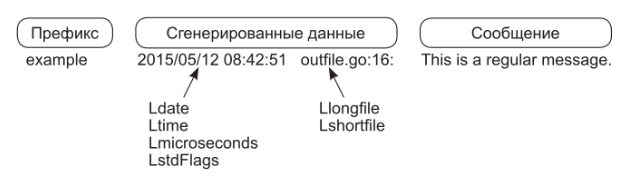

Golang заметки - Журналирование
Простейшее использование пакета log. Сообщения пишутся в os.Stderr:
package main import ( "log" ) func main() { log.Println("Test message") log.Fatal("Fatal message") // будет выход с кодом ошибки }
Журналирование с использование log.Logger, он поддерживает функции передачи данных любому объекту io.Writer, способен работать с файлами и сетевыми подключениями:
package main import ( "log" "os" ) func main() { logfile, _ := os.Create("./test.log") defer logfile.Close() logger := log.New(logfile, "Prefix ", log.LstdFlags|log.Llongfile) logger.Println("Test message") logger.Fataln("Fatal message") }

Пример простого журналирования с записью в сетевой сокет:
package main import ( "log" "net" ) func main() { conn, err := net.Dial("tcp", "localhost:8080") if err != nil { panic("Failed to connect to localhost:8080") } defer conn.Close() logger := log.New(conn, "log: ", log.LstdFlags|log.Llongfile) logger.Println("Test log message") }
Запись сообщений в системный журнал, с помощью log/syslog:
package main import ( "fmt" "log" "log/syslog" ) func main() { priority := syslog.LOG_LOCAL3 | syslog.LOG_NOTICE flags := log.Ldate | log.Lshortfile logger, err := syslog.NewLogger(priority, flags) if err != nil { fmt.Printf("Can't attach to syslog: %s", err) return } logger.Println("This is a test log message.") } // июн 19 00:55:52 kiky-aspire /tmp/go-build002934745/b001/exe/main[12988]: 2020/06/19 main.go:17: This is a test log message.
Динамическое определение вида и уровня серьезности, при записи в системный журнал:
package main import ( "log/syslog" ) func main() { logger, err := syslog.New(syslog.LOG_LOCAL3, "kiky") if err != nil { panic("Cannot attach to syslog") } defer logger.Close() logger.Debug("Debug message.") logger.Notice("Notice message.") logger.Warning("Warning message.") logger.Alert("Alert message.") }
Вывод трассировки стека в поток стандратного вывода:
package main import "runtime/debug" func foo() { bar() } func bar() { debug.PrintStack() } func main() { foo() } // Результат: /* [kiky@kiky-aspire main]$ go run main.go goroutine 1 [running]: runtime/debug.Stack(0xc000034778, 0xc00006af78, 0x40461f) /usr/lib/go/src/runtime/debug/stack.go:24 +0x9d runtime/debug.PrintStack() /usr/lib/go/src/runtime/debug/stack.go:16 +0x22 main.bar(...) /home/kiky/go/src/main/main.go:10 main.foo(...) /home/kiky/go/src/main/main.go:6 main.main() /home/kiky/go/src/main/main.go:14 +0x21 */